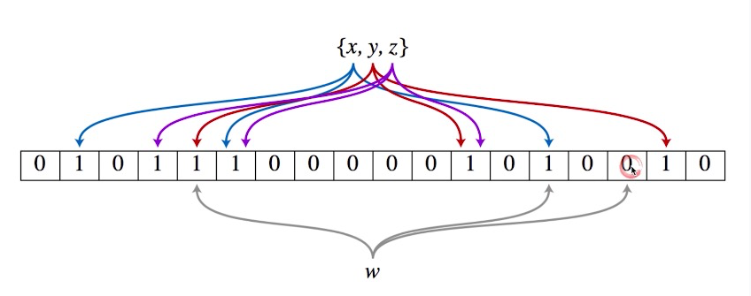

布隆过滤器Bloom Filter
在网络、高并发系统、分布式系统中用的很多，如比特币。
解决问题
可以用于检索一个元素是否在一个集合中
缓存Cache的本质，要查询一个东西，如果在数据库或磁盘上查询会比较慢，所以要在内存甚至寄存器里面倒一个Cache，会非常快。
Filter的概念和Cache是yi qu gong相互互补的，Filter是判断这个元素到底在，还是不在，如果Filter判断它不在，那它肯定不在，如果Filter说它在，那再去数据库或内存里面查找。
实现思想
一个很长的二进制向量 和 一个映射函数。Bloom Filter 和哈希函数的思想类似，但它不是映射到一个地址，而是把元素散射到一个很长的二进制向量里来，在64位的机子上一个integer整型就是64位的二进制向量。
优缺点
优点是空间效率和查询时间都远远超过一般的算法。因为使用二进制，且牺牲了一定的准确率。
缺点是有一定的误识别率和删除困难。当他判断一个元素在这个集合中时，有一定的误识别率，但当他说一个元素不在的时候，是100%肯定不在的。所以这个数据结构才有用。
例1: 对新来元素w，映射到二进制位只要发现有一位不为1，说明w肯定不在。

例2: 误识别率，左边AE是已经插入的元素，右边ACB判断：还需要再进数据库查一次B是否真的存在。
存储地位
Filter是在前面预先挡了一层，把不存在的元素挡掉，在后面必须跟一个真正的数据存储文件，里面有完备的数据，也就是后面的是权威机构，前面只是预先处理模块。
案例
- 比特币
Redis VS BloomFilter
Redis：内存的缓存，把元素暂存在内存中，可以直接从内存返回；
BloomFilter：过滤，不在就不查，在的话再查。
全节点Full Node
最常见，把比特币里面所有的交易记录，谁给谁币，哪个钱包给哪个钱包打币之类的都存在里面。
SPV节点Simplified payment verification
钱包也好，交易所的账号也好，可以在这个节点判断它是否拥有一些交易记录。也就是给一个payment记录，可以很快地判断它是否在这个节点里面。
SPV实现就是在前面挡了一个Bloom Filter。
对任何一条交易如“A给B打钱”，发到服务器，服务器会先在Bloom Filter访问一次看这个节点是否在某一个block里面存在，如果它判断在这个block不存在，那就不需要在这个区块的细节里面查找，而只在它返回说存在的那些block相应的区块里去查看是否存在，找到了就返回相关的交易记录。
因为区块至少有几十万个块，每个区块大概一两兆的交易记录，一个个查过去总体来说很慢。
- 分布式系统 （Map-Reduce）
Google的Map Reduce 把一个大的任务切分成子任务，在判断这些子任务是否在某台机器上存在的时候，也是用Bloom Filter来完成的。